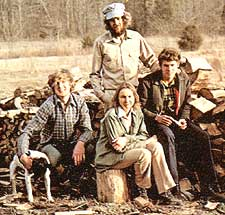
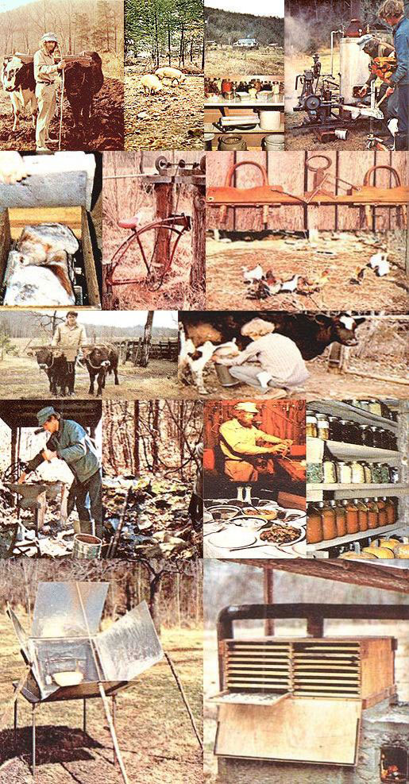

The top winner in MOTHER's Food Self-Sufficiency Competition was the Dan Taylor family of Parthenon, Arkansas . . . and here are some condensed excerpts from their first prize entry. Further and more specific excerpts (on gardening, raising livestock, preserving food, and other aspects of the Taylors' life "just the way they live it") will be featured in coming issues of this magazine.
We are a family of four: Dan (43), Mary Lou (42), Mark (18), and Brad (17). Dan taught chemical engineering in college and Mary Lou was a high school English teacher. We saved our pennies for 10 years and, in March of 1973, bought our 160-acre farm (40 acres of level bottom and 120 acres of rough, hilly woodland) in the Ozark Mountains of Arkansas. We paid cash for the farm and spent an additional $5,000 for stock and equipment.
Our aim has been and will continue to be the establishment of a means . . . for the Taylor family itself to supply its needs for food, energy, and shelter in a manner that's most harmonious with our environment. We believe, if we are to work toward this goal, that we must have an intimate feeling for the true cost of every aspect of our lives.
Our "advanced" economy is based on technology and that technology does a very efficient job of masking the true cost (in depleted resources and damage to the biosphere) that someone or something must sooner or later pay for the food, energy, and shelter we all use.
For example, the food that is so readily available in our society's supermarkets costs so little-only about 18% of the average family's budget-that it is frequently taken for granted. So taken for granted, that most of us complain about our nourishment's "high prices" . . . when, in fact, that food really costs us only a fraction of its true value.
And why do we enjoy such a bargain? Because supermarket food is produced with massive expenditures of petroleum for energy and for the manufacture of agricultural chemicals. And the earth and sun have invested monumental amounts of energy and other resources in the production of that petroleum over untold millions of years.
By an odd quirk of economic history, however, most of this part of the cost of our food doesn't have to be paid for at the supermarket checkout counter. It just happens to be easy to tap and use millions of years' worth of crude oil and, for the last few decades, those supplies of petroleum have been plentiful. They, therefore, have been bought and sold for a fraction of their true worth.
This situation has been very convenient and pleasant. So convenient and pleasant that it has lulled us into the lazy assumption that it is "right" and "natural" for a few farmers with big, complex equipment to produce low-cost food for everyone.
There are, however, two fatal flaws in this cozy assumption: [1] The extremely low-cost supplies of energy and materials on which corporate farming is based are actually quite limited, and will be exhausted someday. [2] Even if these non-renewable resources were . . . not limited, the chemicals and other ill-advised agribiz techniques of modern farming increasingly threaten and damage nature's life-support processes and, therefore, cannot continue to be escalated-perhaps even used-indefinitely.
As deposits of fossil fuels and raw materials dwindle, then, the unnaturally low supermarket price (which many of us already complain about) for food . . . must rise to more accurately reflect the true cost of that food's production. At the same time, the increasing damage-air pollution, chemical poisoning of the soil and water, etc.-done to the environment by our "advanced" industrial society will steadily make that environment less productive. This, also, will force up the price of food.
In our opinion, there is a good chance that these trends will eventually push the price of supermarket food completely beyond the reach of many people . . . and our society will then have to find another way to feed them. And that "way" may very well be a reversion to the "self-sufficiency" of our forebears. We also believe that, as the biosphere is increasingly damaged, such a transition to food self-sufficiency will become more and more difficult.
The longer we delay in starting the switch back to individual and family food self-sufficiency, then, the harder it's going to be to make the change. And, as we personally have learned from firsthand experience, the transition is anything but easy right now.
Our place had a usable house on it when we bought it. We have, therefore, been able to concentrate-all our efforts so far on food and energy production. We do, however, hope to build a dwelling of native materials sometime during the next few years. Goodness knows, we have plenty of rocks!
For 100 years before we bought it, our land was farmed to exhaustion with corn, cotton, sugar cane, and small grains . . . and getting anything at all from our soil has been a struggle. But one way or another, we've produced almost all our own food since we moved here . . . primarily-in the early days because we were willing to eat whatever we had. (We lived on little but canned black-eyed peas and green beans our first winter and, as a result, those legumes still have a special place in our affections.)
Foraging was very important to our survival when we first moved to the farm and it still provides a significant portion of our diet. A big bowl of crisp watercress mixed with tiny wild onions is hard to beat in the spring long before the first lettuce is ready to pick from the garden. Black walnuts and hickory nuts are real staples on our menu and we canned 50 quarts of wild blackberries last year. We also harvest elderberries, huckleberries, gooseberries, grapes, persimmons, and other volunteer vegetables and fruits. They're all good.
Milo maize was a real lifesaver for us the first couple of years we were here. It grows in extremely poor soil and produces . . . in even the hottest and driest summers. In a typical year, we plant 5,000 feet of row with two pounds of maize seed and harvest 300 pounds of the grain.
We harvest our maize by simply cutting the plants' heads off with a pocketknife. We then beat out . . . the grain, grind it fine, and use it just like cornmeal. The ground grain makes a good pan bread and-when cooked in milk-an excellent "maize mush".
By plowing and replowing our garden three or four times during our first winter, working large quantities of manure and limestone into the soil over the years, and sowing a mixture of winter vetch and rye grain ( not grass) on the area each fall and plowing it under as green manure the following spring . . . we've been able to build our vegetable patch into a fairly fertile piece of land.
The planning of each year's garden is probably the most important and the most difficult homestead activity we face. Homegrown fruits and vegetables make up a substantial portion of everything we eat, and we approach our gardening activities in a very serious and systematic way. We rotate crops for maximum utilization of soil fertility and for control of diseases and insect pests. We manure heavily and (although we don't agree with Ruth Stout that it always works miracles on all plantings in all gardens at all times) we use a certain amount of mulch. We use both standard and hybrid seeds and in many other ways take a "middle road" through all the "miracle, cure-all gardening methods" that the "experts" seem to be constantly pushing.
Our best advice to the beginning gardener is: Start slowly with the old cultivation systems-plowing, discing, and harrowing or rototilling-that have already been proven in your area. Experiment with new ideas a little at a time. Beware of the agribiz industry's claims that any and all problems can be solved now and forever by the application of some "magic" chemical. Prepare your seedbed as well as you can and stir the soil around your plants as they grow. Plant across the slope and grow cover crops during the off-season to keep your ground from eroding. Learn what to expect from your soil and climate before you begin to test "far out" theories and ideas . . . and then test such "breakthroughs" cautiously and a little at a time.
Jerusalem artichokes are a true survival food. A few roots from a neighbor are all the start you'll need and, after the first year or two, the plants should become so prolific that you'll have to thin them for better tuber production.
The tuberous roots of this plant "self store" themselves in peak condition in the ground right through the winter and they can be dug and eaten at almost any time. We like 'em raw in salads or prepared any way that potatoes are cooked. We also use Jerusalem artichokes as supplemental feed for our hogs, chickens, and rabbits.
From May to September-when the garden is in full production-our family becomes vegetarians. During the vegetable patch's off-season, however, we eat about 2-1/2 pounds of meat a day. This broke down, for the current year, to: 300 pounds of pork (two 150-pound hogs), 110 pounds of rabbit (54 fryers averaging 2-1/2 pounds each), 100 pounds of Muscovy duck (25 4-pounders), 60 pounds of Bantam chickens (60 1-pound fryers), 24 pounds of Khaki-Campbell ducks (8, weighing 3 pounds each), and 20 pounds of wild squirrels, rabbits, and groundhogs. Grand total: 614 pounds of meat for the four of us.
We keep two sows to raise feeder pigs for market and to produce pork for our homestead use. The feeder pig business is very labor intensive and we had to study a lot to learn the ropes of the game. When the market is reasonable, however, the sale of feeder pigs can substantially boost a small farm's income . . . even when it's necessary to buy feed to carry the animals to market.
In 1975, our total income from the sale of feeder pigs was $1,575 and our total expenses for the hog operation that year came to $954. This left us a gross profit of $621 . . . plus the two fat hogs we butchered for our own use.
Rabbits are an indispensable source of meat for the small homestead . . . if the inexperienced bunny raiser is willing to spend some time studying the animals and giving them regular and adequate care. (We've seen too many people buy rabbits on impulse, leave them to shift for themselves in the most unsatisfactory hutches . . . and then declare that "rabbits aren't worth it".)
Rabbits are "worth it", many times over. When properly housed, a trio of two does and a buck requires only a few minutes of care a day, yet-in an average year-will produce 110 pounds of meat for the table.
We got our start in poultry by purchasing day-old baby chicks from a hatchery. We ordered 25 Light Brahmas, 24 Araucanas, and 10 Bantams. We regret the Brahmas and Araucanas. They eat a lot and lay a little (too damn little) most of the year . . . then, in late winter and early spring, they try to bury us in eggs.
The Bantams, however, were not a mistake. They lay reasonably well, they're excellent setters and mothers, and they forage for most of their food. We plan to butcher everything but the Bantams, add a good laying breed-such as White Leghorns-to our flock, and then set both Bantam and White Leghorn eggs under our Bantam mothers.
We got into the geese business on a small scale by setting two Toulouse eggs under our hens. The chickens didn't mind incubating the large eggs . . . but they refused to raise the ugly goslings. So we brooded the two birds (luckily, one is a goose and the other a gander) in the house and they quickly became pets.
Geese are easy to keep and inexpensive to feed. In our climate they prefer no shelter, they eat grass, and the only grain they get is the little they snitch from the hog trough. They should be a very efficient source of meat and eggs, in other words, but-unfortunately-although our goose has laid and faithfully set 15 or 20 eggs in both the spring of '75 and '76 . . . she hasn't yet hatched a single gosling.
A neighbor gave us a pair of Muscovy ducks in return for help with his cattle and the female sets at least twice each season. As clumsy as she appears to be, she handles the job all by herself and, in 1975, she successfully raised 25 ducklings. When butchered at about five months of age, the meat of these birds is exceptionally tasty and tender and-in our opinion-second to none.
We also have some Khaki-Campbell ducks which, according to a USDA pamphlet, have been known to lay 365 eggs per year. Ours aren't nearly that productive, but they do lay well in the spring and they're easy to care for. Our Khakis forage constantly . . . although they do require some grain, particularly during their laying season.
Our guineas were a glaring failure and we feel that we were misled by Countryside magazine's article about them (January 1976, page 35). MOTHER's information on guineas (MOTHER NO. 9, page 42 and MOTHER NO. 22, page 80), however, is fairly accurate and honest.
Guineas certainly are excellent foragers . . . too good, since their favorite foraging territory is the garden. Young seedlings seem to be quite a delicacy in the guinea diet and the birds have a particular affection for any kind of peas, beans, and squash. Guinea fowl can also spot-and pick out-the tiniest speck of pink on a green tomato.
These birds nearly destroyed our hive of bees by roaming the fields and eating a bee from each blooming flower. They also learned to stand in front of the hive and catch the pollen-laden insects as they landed.
Guineas are poor mothers and, contrary to popular belief, have little value as "watchdogs" (they screech all the time, so you never know when a fox is really attacking the chickens). The birds are extremely wary and, after you've killed one, the only way you'll ever harvest the rest is with a rifle. Guineas like to sleep in trees, where they are easily located and killed by owls.
We do agree that guinea meat is delicious. It's perhaps the best meat of all the poultry . . . if eaten young (about the "fryer" or "broiler" stage). Older guinea fowls, however, are truly "tough as a boot".
All in all, guineas haven't been worth the effort for us.
We have three mixed-breed cows that are bred to calve at four-month intervals. The idea was to have one of the three coming fresh and producing between three and four gallons of milk per day early in her lactation on a regular enough schedule to give us a steady supply of milk the year round. We figured that each new calf could have one gallon of the flow every day . . . and we'd use the other two.
And that's just the way everything worked out . . . until our current cow dropped twin heifers! (The best laid plans, you know . . . . ) So now we only have a scant gallon of milk for our daily household use. But that's a small price to pay for what will probably be our replacement cows.
We freely admit that our goal of self-sufficiency is unattainable in the purest sense. We could never, for instance, produce the iron in a plow nor manufacture the implement in our back yard. For this reason, we're willing to accept what we call a durable technology.
Our definition of "durable" is a tool which [1] uses only renewable sources of energy as its driving force, [2] has a relatively long life . . . say, on the order of a human lifetime, and [3] when damaged or worn, can-in almost every instance-be repaired right here on the farm.
We rescued a forge from a junk pile, bought an anvil for $60 at an auction, and purchased a vise for an additional $30 at another sale. It's hard to believe how handy it is to be able to work metal! We find annealing to be a particularly valuable skill to have around the homestead, and there are days when we actually fire up our forge two or three times.
We first tried to farm this place with an old tractor. But it is simply impossible to operate a tractor in our rough woodland and on the small patches of land we cultivate. Besides that, we didn't like the expense of pouring non-renewable gasoline through such a piece of machinery.
Our attempts at using horses proved equally frustrating. Real draft horses are few and far between on today's market and, therefore, very expensive. The horses and mules which we did find that we could afford were usually of the "saddle type" and too small to do a significant amount of work.
If our limited experience with the animals is any indication, horses have at least three other major drawbacks: [1] They must be fed large quantities of grain when they're working. [2] Their harness is expensive. [3] Many horses become excited in a confusing or tight situation and immediately make a gigantic lurch or jump. The invariable result of this action-at best -is a broken set of harness, expensive repairs, and delays.
We got our idea for farming with oxen from John Scarlett's article in MOTHER NO. 21. Without a doubt, this was our single most important discovery and has meant the difference between failure and success in our operation.
It's impossible to list all the fine qualities of a team of working oxen here, but we can't resist setting down a few:
Oxen-especially when hand-fed from birth-are calm, steady, and forgiving. When confronted with an unfamiliar situation . . . they tend to simply stop and think things over. (This is an ideal response, since it gives the teamster a chance to gather his thoughts too.)
Oxen are not unduly expensive nor are they hard to find. As soon as we read Scarlett's article, we went out to the calf pen and chose two bulls of about the same age and size. That's how easy it was to find our team.
Oxen are not difficult to train. None of the four of us had ever seen another team of the animals work before but, by following the simple instructions in John's article, we soon had our pair working together beautifully.
You do not have to spend a lot of money to "harness" a span of oxen. We wrote to John Scarlett and, following the directions he sent by return mail, made our own sliding yoke (which is far superior to a standard yoke) with just the crudest of tools. Our only expense was a few cents for having the yoke's beam sawed out and a few dollars for nuts and bolts.
Oxen are sure-footed and work well in brush and other tangles, and their simple gear is much harder to foul than the harness on a team of horses.
Oxen are "easy keepers". The animals can get by reasonably well on no grain at all if they're allowed all the forage or hay they can eat.
We use our span to pull a moldboard plow, disc harrow, spring tooth harrow, standard tooth harrow, row cultivator, two-row planter, mowing machine, hay rake, and hay wagon. "Bigun" and "Mawry" are also invaluable for dragging logs out of the woods and hauling firewood on our cart. We even used them for two years to turn the "sweep" on a homemade irrigation rig to pump 1,000 gallons of water an hour 15 feet up slope from the Little Buffalo River to our garden.
And, lest you think these marvelous beasts have "spoiled" us, we hasten to add that our healthy respect for the true cost of all the energy they contribute remains . . . since we must still provide the pasture and hay that our oxen eat.
The design for our solar oven was taken from MOTHER NO. 25, and we couldn't be more pleased. The unit, which cost us $20.50 to build, gets its heaviest workout in the summer . . . when heat from our wood-burning cookstove would make the house intolerable. In addition, the oven saves us the work and time that we'd otherwise waste cutting wood for our summertime cooking.
The empty oven will go up to 350° F on a particularly clear day, and on hazy days it registers 275-300°. Cooking is somewhat slower with the rig than with the cookstove, but we think that most foods-yeast bread, pan bread, potatoes, meats, and a dozen other things-taste better when cooked slowly.
Pressure canning 1,300 quarts of food on a wood cookstove (as we did in 1975) is a lot of hard work, and jar lids-when you can get them-are expensive (we spent $35 for the 80 dozen lids we used in 1975). That's a lot of effort and money to put into the sterilizing and storing of massive amounts of water.
We've tried sun-drying our garden produce several times and-thanks to the heavy dew we have every night throughout the summer-it's completely unworkable for us (even when we cover the food or take it inside each evening). Electric dryers are too expensive to operate and they use non-renewable energy . . . and we don't care for oil-fired units because the fumes from their burning fuel (which is also non-renewable) always seem to taint the produce they contain.
And so-for $72.25-we've built a dryer which circulates clean, controlled, smoke-free air at any temperature up to 150° F through anything we want to preserve . . . and which is heated by the renewable fuel that we cut from our 120 acres of woodland. It works like a charm, and we figure that by disconnecting a single length of pipe-so the smoke from the fire will go up through, rather than around the drying chamber-we'll be able to use the rig as a meat smoker when we butcher this year.
We've managed to locate and buy two steam engines.
One weighs only 100 pounds and puts out five horsepower. We plan to set it on wheels with a small boiler and pull it around from the irrigation pump, to a washing machine, to a battery charger (for some household lights, a car radio for news and weather reports, and our electric fence), to a grain thresher, to a concrete mixer, etc.
The other powerplant-which we call "Big Mama"-will be used for larger jobs, such as driving a cordwood saw (thereby freeing us from the gasoline-hungry chain saw).
We paid $200 for the five-horse engine, $100 for Big Mama, and $135 for our boiler. Another $100 (for pipe and fittings) should put both powerplants into operation. At that point we'll be well on the road to "all the comforts of home" that we either need or want . . . compliments of the renewable fuel from our homestead's 120-acre woodland.
The National Aeronautics and Space Administration is very proud of its solar-powered energy system for spacecraft . . . but we don't think NASA has anything on us. The grass in our pasture and the trees in our woods gather the sun's energy and store it for later use. Our oxen then consume the grass and use the energy derived therefrom for draft work . . . and we cut the wood and burn it in our stoves, steam engines, and food dryer. Even the nutritional value of the things we eat from our garden, orchard, woodland, and the animals we butcher originally comes from the sun. NASA hasn't got a thing on us.
Our fondest hope for the future rests with our 80 Chinese chestnut trees. We planted the trees as small seedlings in the fall of 1973 and gathered our first 10 pounds of chestnuts in the fall of 1976. They're great! We like them!
Although it may be nothing but a daydream, we hope that our trees eventually will produce 100 pounds of nuts per tree. That's 8,000 pounds of food with a protein content roughly three times that of corn . . . or the equivalent of 24,000 pounds of corn. At today's prices, that's a harvest worth $1,400.
Pipe dream or not, we expect to feed most of our chestnuts to the livestock in place of grain. This kind of "tree culture" has been done before by other people in other lands and we like the idea. Silva culture, once established, requires no annual replanting and cultivation and protects and holds the soil better than more conventional forms of agriculture. We love our chestnut trees!
Many of our relatives and former associates seem compelled to make excuses for our present way of life. They seem to feel that we must be running from something or getting ready for some impending disaster. Or maybe they just think we lost our jobs and have no other choice in the way we currently live.
Actually, we become uncomfortable when others talk about "getting out of the rat race" or "preparing ourselves for when the big pinch comes". We don't try to deceive ourselves by thinking that we are somehow immune to an economic, environmental, or social disaster. Even down here on our Ozark homestead, we are still an integral part of modern society. If it has troubles, we fully expect that we'll have to share them. There's really no place to hide anymore.
So we have not run away from any "rat race", nor have we tried to brace ourselves against any impending disaster. Rather, we simply enjoy trying to live our lives so that we have the absolute minimum adverse impact on the environment and so that we achieve the maximum harmony with the universe. Or, to put it another way, we try to live so that our personal effect on the environment will help to prevent a "big pinch" from ever taking place.
|
 |
 |
|